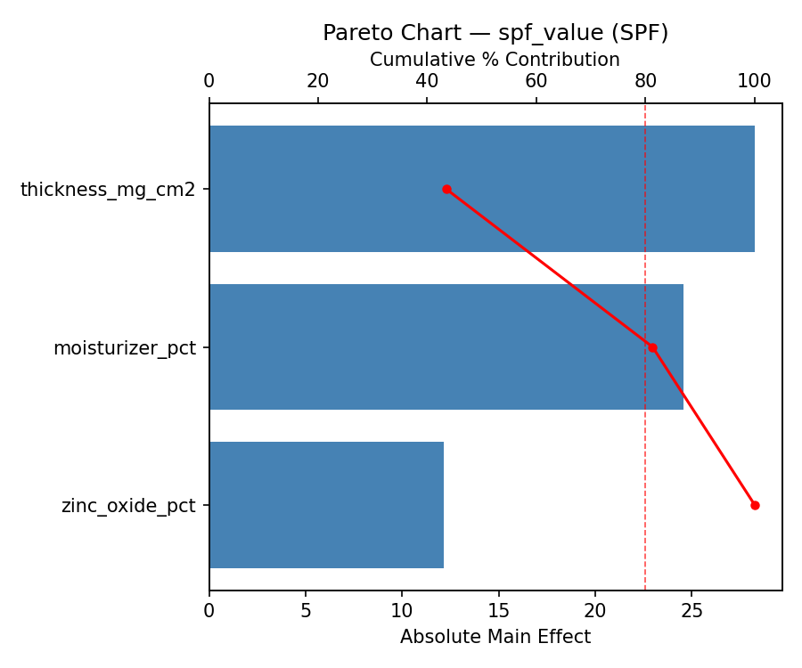
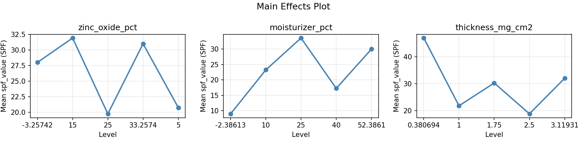
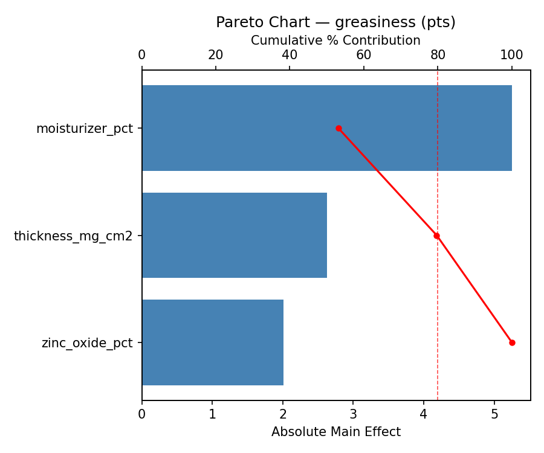
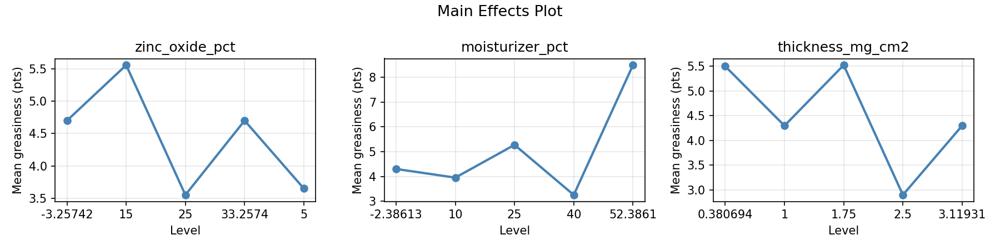
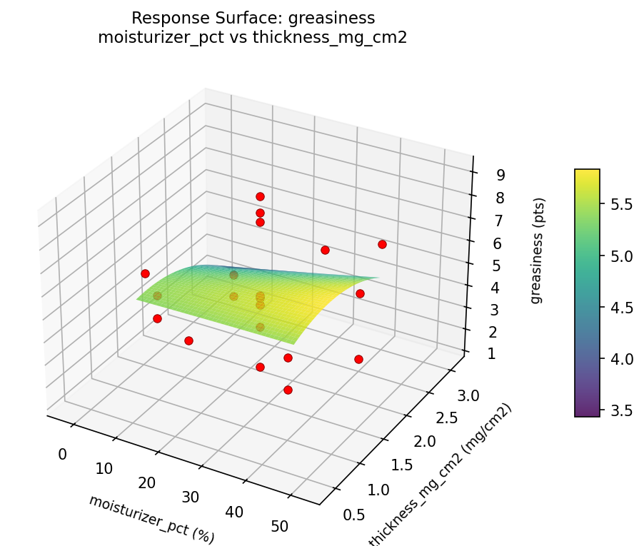
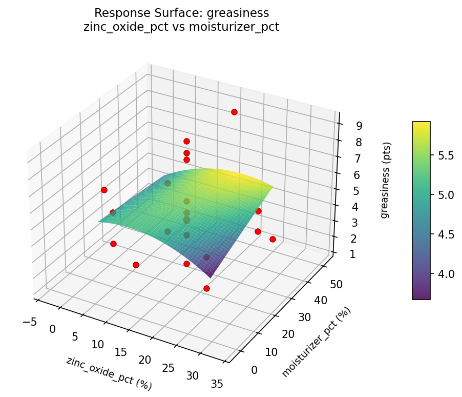
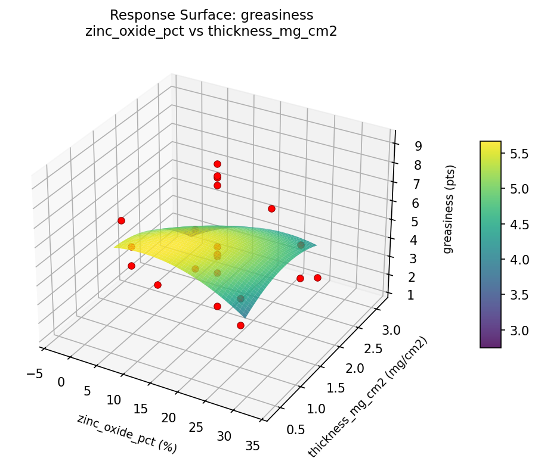
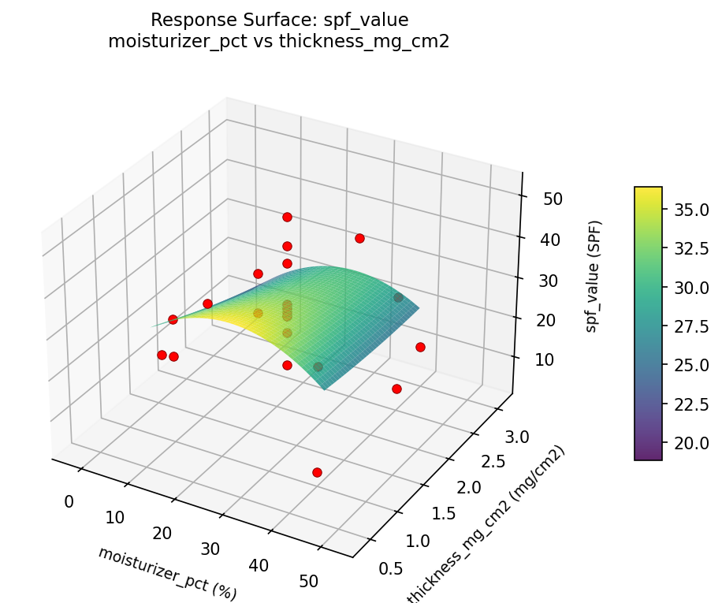
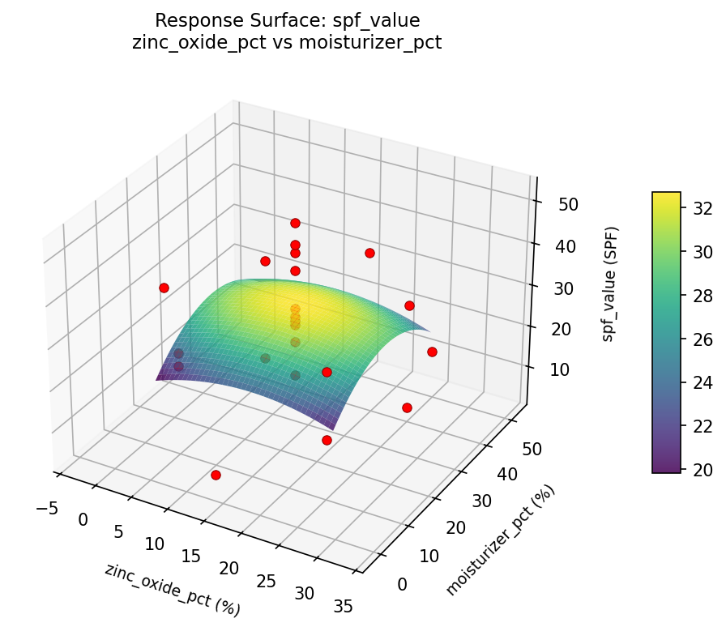
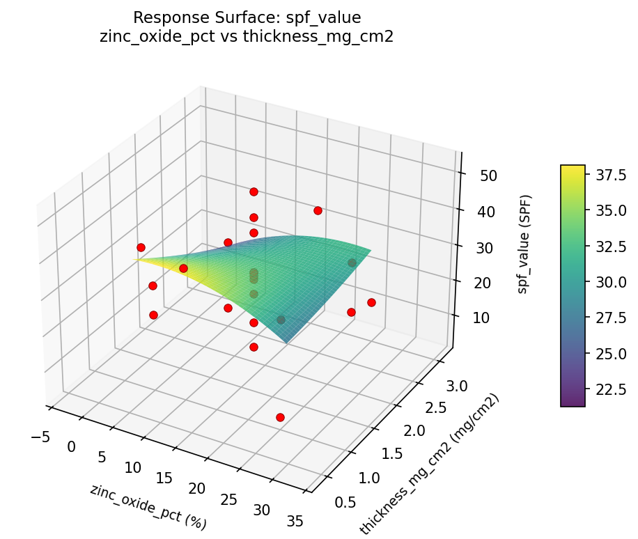

Experimental Setup
Factors
| Factor | Low | High | Unit |
|---|
zinc_oxide_pct | 5 | 25 | % |
moisturizer_pct | 10 | 40 | % |
thickness_mg_cm2 | 1.0 | 2.5 | mg/cm2 |
Fixed: base_type = cream, uva_filter = avobenzone
Responses
| Response | Direction | Unit |
|---|
spf_value | ↑ maximize | SPF |
greasiness | ↓ minimize | pts |
Configuration
{
"metadata": {
"name": "Sunscreen SPF Formulation",
"description": "Central composite design to maximize SPF protection and minimize greasiness by tuning zinc oxide concentration, moisturizer ratio, and application thickness"
},
"factors": [
{
"name": "zinc_oxide_pct",
"levels": [
"5",
"25"
],
"type": "continuous",
"unit": "%"
},
{
"name": "moisturizer_pct",
"levels": [
"10",
"40"
],
"type": "continuous",
"unit": "%"
},
{
"name": "thickness_mg_cm2",
"levels": [
"1.0",
"2.5"
],
"type": "continuous",
"unit": "mg/cm2"
}
],
"fixed_factors": {
"base_type": "cream",
"uva_filter": "avobenzone"
},
"responses": [
{
"name": "spf_value",
"optimize": "maximize",
"unit": "SPF"
},
{
"name": "greasiness",
"optimize": "minimize",
"unit": "pts"
}
],
"settings": {
"operation": "central_composite",
"test_script": "use_cases/116_sunscreen_formulation/sim.sh"
}
}
Experimental Matrix
The Central Composite Design produces 22 runs. Each row is one experiment with specific factor settings.
| Run | zinc_oxide_pct | moisturizer_pct | thickness_mg_cm2 |
|---|
| 1 | 15 | 25 | 1.75 |
| 2 | 25 | 10 | 2.5 |
| 3 | 5 | 40 | 1 |
| 4 | 15 | 52.3861 | 1.75 |
| 5 | 15 | 25 | 1.75 |
| 6 | -3.25742 | 25 | 1.75 |
| 7 | 15 | 25 | 0.380694 |
| 8 | 15 | 25 | 1.75 |
| 9 | 25 | 40 | 1 |
| 10 | 33.2574 | 25 | 1.75 |
| 11 | 15 | 25 | 1.75 |
| 12 | 15 | -2.38613 | 1.75 |
| 13 | 15 | 25 | 1.75 |
| 14 | 5 | 10 | 2.5 |
| 15 | 15 | 25 | 1.75 |
| 16 | 25 | 10 | 1 |
| 17 | 15 | 25 | 3.11931 |
| 18 | 25 | 40 | 2.5 |
| 19 | 15 | 25 | 1.75 |
| 20 | 5 | 10 | 1 |
| 21 | 5 | 40 | 2.5 |
| 22 | 15 | 25 | 1.75 |
Step-by-Step Workflow
1
Preview the design
$ python doe.py info --config use_cases/116_sunscreen_formulation/config.json
2
Generate the runner script
$ python doe.py generate --config use_cases/116_sunscreen_formulation/config.json \
--output use_cases/116_sunscreen_formulation/results/run.sh --seed 42
3
Execute the experiments
$ bash use_cases/116_sunscreen_formulation/results/run.sh
4
Analyze results
$ python doe.py analyze --config use_cases/116_sunscreen_formulation/config.json
5
Get optimization recommendations
$ python doe.py optimize --config use_cases/116_sunscreen_formulation/config.json
6
Generate the HTML report
$ python doe.py report --config use_cases/116_sunscreen_formulation/config.json \
--output use_cases/116_sunscreen_formulation/results/report.html
Features Exercised
| Feature | Value |
|---|
| Design type | central_composite |
| Factor types | continuous (all 3) |
| Arg style | double-dash |
| Responses | 2 (spf_value ↑, greasiness ↓) |
| Total runs | 22 |
Analysis Results
Generated from actual experiment runs using the DOE Helper Tool.
Response: spf_value
Top factors: thickness_mg_cm2 (43.5%), moisturizer_pct (37.8%), zinc_oxide_pct (18.7%).
Pareto Chart

Main Effects Plot

Response: greasiness
Top factors: moisturizer_pct (53.1%), thickness_mg_cm2 (26.6%), zinc_oxide_pct (20.3%).
Pareto Chart

Main Effects Plot

Response Surface Plots
3D surfaces fitted with quadratic RSM. Red dots are observed data points.
greasiness moisturizer pct vs thickness mg cm2

greasiness zinc oxide pct vs moisturizer pct

greasiness zinc oxide pct vs thickness mg cm2

spf value moisturizer pct vs thickness mg cm2

spf value zinc oxide pct vs moisturizer pct

spf value zinc oxide pct vs thickness mg cm2

Full Analysis Output
RSM surface: rsm_spf_value_zinc_oxide_pct_vs_moisturizer_pct.png
RSM surface: rsm_spf_value_zinc_oxide_pct_vs_thickness_mg_cm2.png
RSM surface: rsm_spf_value_moisturizer_pct_vs_thickness_mg_cm2.png
RSM surface: rsm_greasiness_zinc_oxide_pct_vs_moisturizer_pct.png
RSM surface: rsm_greasiness_zinc_oxide_pct_vs_thickness_mg_cm2.png
RSM surface: rsm_greasiness_moisturizer_pct_vs_thickness_mg_cm2.png
=== Main Effects: spf_value ===
Factor Effect Std Error % Contribution
--------------------------------------------------------------
thickness_mg_cm2 28.2500 2.6447 43.5%
moisturizer_pct 24.5833 2.6447 37.8%
zinc_oxide_pct 12.1667 2.6447 18.7%
=== Summary Statistics: spf_value ===
zinc_oxide_pct:
Level N Mean Std Min Max
------------------------------------------------------------
-3.25742 1 28.0000 0.0000 28.0000 28.0000
15 12 31.9167 12.6380 9.0000 52.0000
25 4 19.7500 12.6853 4.0000 31.0000
33.2574 1 31.0000 0.0000 31.0000 31.0000
5 4 20.7500 10.3722 6.0000 30.0000
moisturizer_pct:
Level N Mean Std Min Max
------------------------------------------------------------
-2.38613 1 9.0000 0.0000 9.0000 9.0000
10 4 23.2500 6.6521 15.0000 31.0000
25 12 33.5833 10.4921 16.0000 52.0000
40 4 17.2500 14.1745 4.0000 30.0000
52.3861 1 30.0000 0.0000 30.0000 30.0000
thickness_mg_cm2:
Level N Mean Std Min Max
------------------------------------------------------------
0.380694 1 47.0000 0.0000 47.0000 47.0000
1 4 21.7500 12.5000 4.0000 31.0000
1.75 12 30.2500 11.7251 9.0000 52.0000
2.5 4 18.7500 10.3401 6.0000 29.0000
3.11931 1 32.0000 0.0000 32.0000 32.0000
=== Main Effects: greasiness ===
Factor Effect Std Error % Contribution
--------------------------------------------------------------
moisturizer_pct 5.2500 0.4469 53.1%
thickness_mg_cm2 2.6250 0.4469 26.6%
zinc_oxide_pct 2.0083 0.4469 20.3%
=== Summary Statistics: greasiness ===
zinc_oxide_pct:
Level N Mean Std Min Max
------------------------------------------------------------
-3.25742 1 4.7000 0.0000 4.7000 4.7000
15 12 5.5583 2.3739 1.6000 9.1000
25 4 3.5500 0.9469 2.5000 4.4000
33.2574 1 4.7000 0.0000 4.7000 4.7000
5 4 3.6500 1.7483 1.3000 5.4000
moisturizer_pct:
Level N Mean Std Min Max
------------------------------------------------------------
-2.38613 1 4.3000 0.0000 4.3000 4.3000
10 4 3.9500 1.2396 2.5000 5.4000
25 12 5.2750 2.1797 1.6000 9.1000
40 4 3.2500 1.4480 1.3000 4.4000
52.3861 1 8.5000 0.0000 8.5000 8.5000
thickness_mg_cm2:
Level N Mean Std Min Max
------------------------------------------------------------
0.380694 1 5.5000 0.0000 5.5000 5.5000
1 4 4.3000 0.9866 3.0000 5.4000
1.75 12 5.5250 2.3715 1.6000 9.1000
2.5 4 2.9000 1.2961 1.3000 4.3000
3.11931 1 4.3000 0.0000 4.3000 4.3000
Pareto chart (spf_value): use_cases/116_sunscreen_formulation/results/analysis/pareto_spf_value.png
Pareto chart (greasiness): use_cases/116_sunscreen_formulation/results/analysis/pareto_greasiness.png
Main effects (spf_value): use_cases/116_sunscreen_formulation/results/analysis/main_effects_spf_value.png
Main effects (greasiness): use_cases/116_sunscreen_formulation/results/analysis/main_effects_greasiness.png
Optimization Recommendations
=== Optimization: spf_value ===
Direction: maximize
Best observed run: #18
zinc_oxide_pct = 25
moisturizer_pct = 10
thickness_mg_cm2 = 2.5
Value: 52.0
RSM Model (linear, R² = 0.0635, Adj R² = -0.0926):
Coefficients:
intercept +27.4545
zinc_oxide_pct +0.1131
moisturizer_pct -2.9757
thickness_mg_cm2 +2.2644
RSM Model (quadratic, R² = 0.3276, Adj R² = -0.1766):
Coefficients:
intercept +25.8493
zinc_oxide_pct +0.1131
moisturizer_pct -2.9757
thickness_mg_cm2 +2.2644
zinc_oxide_pct*moisturizer_pct -1.5000
zinc_oxide_pct*thickness_mg_cm2 +3.7500
moisturizer_pct*thickness_mg_cm2 -5.0000
zinc_oxide_pct^2 -0.6474
moisturizer_pct^2 -1.5474
thickness_mg_cm2^2 +4.6026
Curvature analysis:
thickness_mg_cm2 coef=+4.6026 convex (has a minimum)
moisturizer_pct coef=-1.5474 concave (has a maximum)
zinc_oxide_pct coef=-0.6474 concave (has a maximum)
Notable interactions:
moisturizer_pct*thickness_mg_cm2 coef=-5.0000 (antagonistic)
zinc_oxide_pct*thickness_mg_cm2 coef=+3.7500 (synergistic)
zinc_oxide_pct*moisturizer_pct coef=-1.5000 (antagonistic)
Predicted optimum (from linear model):
zinc_oxide_pct = 15
moisturizer_pct = -2.38613
thickness_mg_cm2 = 1.75
Predicted value: 32.8874
Model quality: Weak fit — consider adding center points or using a different design.
Factor importance:
1. moisturizer_pct (effect: 28.0, contribution: 36.0%)
2. zinc_oxide_pct (effect: 27.8, contribution: 35.7%)
3. thickness_mg_cm2 (effect: 22.0, contribution: 28.3%)
=== Optimization: greasiness ===
Direction: minimize
Best observed run: #20
zinc_oxide_pct = 15
moisturizer_pct = 25
thickness_mg_cm2 = 1.75
Value: 1.3
RSM Model (linear, R² = 0.1452, Adj R² = 0.0028):
Coefficients:
intercept +4.7682
zinc_oxide_pct +0.6694
moisturizer_pct -0.3360
thickness_mg_cm2 +0.5941
RSM Model (quadratic, R² = 0.5431, Adj R² = 0.2005):
Coefficients:
intercept +3.9077
zinc_oxide_pct +0.6694
moisturizer_pct -0.3360
thickness_mg_cm2 +0.5941
zinc_oxide_pct*moisturizer_pct +1.0250
zinc_oxide_pct*thickness_mg_cm2 +0.9250
moisturizer_pct*thickness_mg_cm2 -1.1500
zinc_oxide_pct^2 +0.2953
moisturizer_pct^2 +0.6403
thickness_mg_cm2^2 +0.3553
Curvature analysis:
moisturizer_pct coef=+0.6403 convex (has a minimum)
thickness_mg_cm2 coef=+0.3553 convex (has a minimum)
zinc_oxide_pct coef=+0.2953 convex (has a minimum)
Notable interactions:
moisturizer_pct*thickness_mg_cm2 coef=-1.1500 (antagonistic)
zinc_oxide_pct*moisturizer_pct coef=+1.0250 (synergistic)
zinc_oxide_pct*thickness_mg_cm2 coef=+0.9250 (synergistic)
Predicted optimum (from quadratic model):
zinc_oxide_pct = 25
moisturizer_pct = 10
thickness_mg_cm2 = 2.5
Predicted value: 7.8479
Model quality: Moderate fit — use predictions directionally, not precisely.
Factor importance:
1. moisturizer_pct (effect: 5.0, contribution: 49.7%)
2. zinc_oxide_pct (effect: 2.7, contribution: 26.3%)
3. thickness_mg_cm2 (effect: 2.4, contribution: 23.9%)